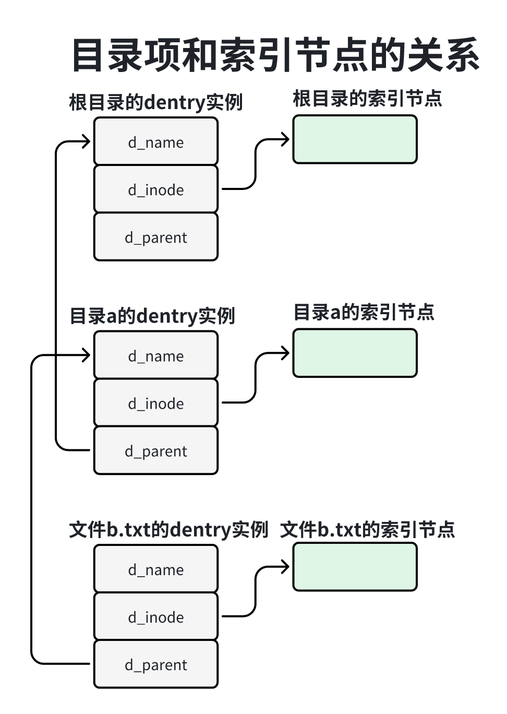
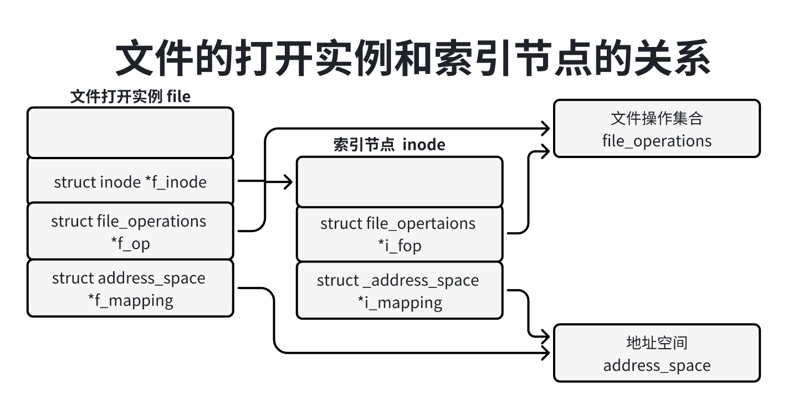
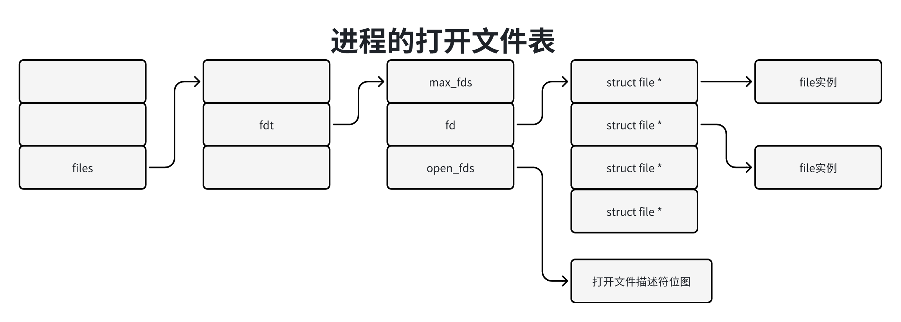

虽然不同文件系统的物理结构不同，但是虚拟文件系统定义了一套统一的数据结构。
1、超级块：文件系统的第一块是超级块，描述稳健性系统的总体信息，挂载文件系统的时候子啊内存中创建超级块的副本。结构图super_block。
2、虚拟文件系统在内存中把目录组织陈一棵树，一个文件系统，只有挂载到内存中目录树到一个目录下，进程才能访问这个文件系统。每次挂载文件系统，虚拟文件系统就会创建一个挂载描述符，mount结构体，并且读文件系统的超级块，在内存中创建超级块的一个副本。
3、每种文件系统的超级块的格式不同，需要项虚拟文件系统注册文件系统类型file_system_type，并未实现mount方法用来读取和解析超级块。
4、索引节点：每个文件对应一个索引节点，每个索引节点有一个唯一的编号，当内核访问存储设备上的一个文件时，会在内存中创建索引节点的一个副本，结构体inode。
5、目录项：文件系统吧目录看做文件的一种类型，目录的数据是由目录项组成的，每个目录项存储一个子目录或文件的名称以及对应的索引节点号。当内核访问存储设备上的一个目录项时，会在内存中创建一个副本：结构体dentry。
6、当进程打开一个文件的时候，虚拟文件系统就会创文件的一个打开实例，file结构体，然后在集成度额打开文件表中分配一个索引，这个索引称为文件描述符，最后吧文件描述符和file结构体的映射添加到打开文件表中。
文件系统的第一块是超级块，用来描述文件系统的总体信息。当我们吧文件系统挂载到内存中目录树的一个目录下时，救护吧读文件系统的超级块，子啊内存中创建超级块的副本：结构体super_block，主要成员如下：
391// 位置：include/linux/fs.h2
3struct super_block {4 // 用来把所有超级块实例链接到全局链表（super_blocks）5 struct list_head s_list; 6 // 保存文件新系统所在的块设备，dev_t保存设备号 s_dev保存一个block_service实例7 dev_t s_dev; 8 // 块长度，9 unsigned char s_blocksize_bits;10 // 块长度以2为底的对数11 unsigned long s_blocksize;12 // 文件系统支持的最大文件长度13 loff_t s_maxbytes; 14 // 指向文件系统类型15 struct file_system_type *s_type;16 // 指向超级块操作集合17 const struct super_operations *s_op;18 ...19
20 unsigned long s_flags;21 unsigned long s_iflags; 22 // 文件系统类型的魔幻数，每种文件系统类型被分配一个唯一的魔幻数23 unsigned long s_magic;24 // 指向根目录的结构体dentry25 struct dentry *s_root;26 ...27 struct hlist_bl_head s_anon; 28 struct list_head s_mounts;29 struct block_device *s_bdev;30 struct backing_dev_info *s_bdi;31 struct mtd_info *s_mtd;32 // 用来把同一个文件系统类型的所有超级块实例链接在一起，链表的头节点是结构体file_system_type33 // 成员fs_supers34 struct hlist_node s_instances;35 ...36 // 指向具体文件系统的私有信息37 void *s_fs_info; 38 ... 39};超级块操作集合的数据结构是结构体super_operations主要成员如下：
291// 位置：include/linux/fs.h2
3struct super_operations {4 // alloc_inode用来为一个索引节点分配内存并且初始化5 struct inode *(*alloc_inode)(struct super_block *sb);6 // 用来释放内存中的索引节点7 void (*destroy_inode)(struct inode *);8
9 // 用来把索引节点标记为脏10 void (*dirty_inode) (struct inode *, int flags);11 // 用来把一个索引节点写到存储设备12 int (*write_inode) (struct inode *, struct writeback_control *wbc);13 // 用来在索引节点的引用计数减到0时调用14 int (*drop_inode) (struct inode *);15 // 用来从存储设备上的文件系统中删除一个索引节点16 void (*evict_inode) (struct inode *);17 // 用来释放超级块18 void (*put_super) (struct super_block *);19 // 用来把文件系统修改过的数据同步到存储设备20 int (*sync_fs)(struct super_block *sb, int wait);21 ...22 // 用来丢去文件系统的统计信息23 int (*statfs) (struct dentry *, struct kstatfs *);24 // 用来在重新挂载文件系统的时候调用25 int (*remount_fs) (struct super_block *, int *, char *);26 // 用来在卸载文件的时候调用27 void (*umount_begin) (struct super_block *);28 ...29};一个文件系统，只有挂载到内存中目录树的一个目录下，进程才能访问这个文件系统。每次挂载文件系统，虚拟文件系统就会创建一个挂载描述符：mount结构体。挂载描述符用来描述文件系统的一个挂载实例，同一个存储设备上的文件系统可以多次挂载，每次挂载到不同的目录下。
挂载描述符的主要成员如下：
291// 位置：fs/mound.h2
3struct mount {4 struct hlist_node mnt_hash;5 struct mount *mnt_parent;6 struct dentry *mnt_mountpoint;7 struct vfsmount mnt;8 union {9 struct rcu_head mnt_rcu;10 struct llist_node mnt_llist;11 };12 struct mnt_pcp __percpu *mnt_pcp;14 int mnt_count;16 int mnt_writers;17 struct list_head mnt_mounts;19 struct list_head mnt_child;20 struct list_head mnt_instance;21 const char *mnt_devname;22 struct list_head mnt_list;23 ...24 struct mount *mnt_master;25 struct mnt_namespace *mnt_ns;26 struct mountpoint *mnt_mp;27 struct hlist_node mnt_mp_list;28 ...29};假设我们把文件系统2挂载到目录“/a”下，目录a属于文件系统1。目录a称为挂载点，文件系统2的mount实例是文件系统1的mount实例的孩子，文件系统1的mount实例是文件系统2的mount实例的父亲。
1、成员mnt_parent指向父亲，即稳健性系统1的mount实例。
2、成员mnt_mountpoint指向作为挂载点的目录，即文件系统1的目录啊，目录a的dentry实例的成员d_flags设置了标志位DCACHE_MOUNTED。
3、成员mnt的类型如下：
71struct vfsmount{2 // 指向文件系统2的根目录3 struct dentry *mnt_root;4 // 指向文件系统2的超级块5 struct super_block *mnt_sb;6 int mnt_flags;7}4、成员mnt_mounts是孩子链表的头节点。
5、成员mnt_mounts是孩子链表的头节点。
6、mnt_child用来加入父亲的孩子链表。
7、成员mnt_instance用来挂载描述符添加到超级块的挂载实例链表中，同一个存储设备上的文件系统，可以多次挂载，每次挂载到不同的目录下。
8、成员mnt_devname指向存储设备的名称。
9、成员mnt_ns指向挂载命名空间。
10、成员mnt_mp指向挂载点，类型如下：
61struct mountpoint{2 struct hlist_node m_hash;3 struct dentry *m_dentry;4 struct hlist_head m_list;5 int m_count;6};m_dentry只想作为挂载点的目录，m_list用来把同一个挂载点下的所有挂载描述符链接起来。为什么同一个挂载点会有多个挂在描述符？这个挂载命名空间有关。
11、成员mnt_mp_list用来把挂在描述符加入同一个挂载点的挂载描述符链表，链表的头节点是成员mnt_mp的成员m_list。
因为每种文件系统的超级块的格式不同，所以每种文件系统需要向虚拟文件系统注册文件系统类型file_system_type，并且实现mount方法用来读取和解析超级块。结构体file_system_type如下：
231// 位置：include/linux/fs.h2
3struct file_system_type {4 // 文件系统类型的名称5 const char *name;6 int fs_flags;7 // 用来挂载文件系统的时候读取并且解析超级块13 struct dentry *(*mount) (struct file_system_type *, int,14 const char *, void *);15 // 用来卸载文件系统的时候释放超级块16 void (*kill_sb) (struct super_block *);17 struct module *owner;18 struct file_system_type * next;19 20 // 多个存储设备上的文件系统的类型可能相同，fs_supers用来把相同文件系统类型的超级块链接起来21 struct hlist_head fs_supers;22 ...23};在文件系统中，每个文件对应一个索引节点，索引节点描述两类信息。
1、文件的属性：也称为元数据（metadata）例如文件长度，创建文件的用户的标识符、上一次访问的时间和上一次修改的时间等。
2、文件数据的存储位置。
每个索引节点有一个唯一的编号。
当内核访问存储设备上的一个文件时，会在内存中创建索引节点的一个副本：结构体inode主要成员如下：
791// 位置：include/linnus/fs.h2
3struct inode {4 // 是文件类和访问权限5 umode_t i_mode;6 unsigned short i_opflags;7 // 是创建文件的用户标识符8 kuid_t i_uid;9 // 是创建文件的用户所属的组标识符10 kgid_t i_gid;11 unsigned int i_flags;12
13 struct posix_acl *i_acl;15 struct posix_acl *i_default_acl;16
18 const struct inode_operations *i_op;19 // 指向文件所属的文件系统的超级块20 struct super_block *i_sb;21 // 指向文件的地址空间22 struct address_space *i_mapping;23 ...24 unsigned long i_ino;25
26 union {27 // 硬链接计数28 const unsigned int i_nlink;29 unsigned int __i_nlink;30 };31 // 如果文件的类型是字符设备或块设备文件，那么i_rdev是块设备号32 dev_t i_rdev;33 // 是文件的长度34 loff_t i_size;35 // 上一次访问文件的时间36 struct timespec i_atime;37 // 上一次修改文件数据的时候38 struct timespec i_mtime;39 // 上一次已修改文件索引节点的时间40 struct timespec i_ctime;41 spinlock_t i_lock;42 // 文件长度除以块长度的余数43 unsigned short i_bytes;44 // 块长度以2为底的对数，块长度是2的i_blkbiits次幂45 unsigned int i_blkbits;46 // 文件的块数 就是文件长度除以块长度的商47 blkcnt_t i_blocks;48 ...49
50 struct list_head i_lru; 51 struct list_head i_sb_list;52 struct list_head i_wb_list;53 union {54 struct hlist_head i_dentry;55 struct rcu_head i_rcu;56 };57 u64 i_version;58 // 索引节点的引用计数59 atomic_t i_count;60 atomic_t i_dio_count;61 atomic_t i_writecount;62 atomic_t i_readcount;64 const struct file_operations *i_fop;66 struct file_lock_context *i_flctx;67 struct address_space i_data;68 struct list_head i_devices;69 union {70 struct pipe_inode_info *i_pipe;71 struct block_device *i_bdev;72 struct cdev *i_cdev;73 char *i_link;74 unsigned i_dir_seq;75 };76 ...77
78 void *i_private;79};文件分为以下几种类型：
1、普通文件（regluar file）：就是我们通常说的文件，狭义的文件。
2、目录：目录是一种特殊的文件，这种文件的数据是由目录项组成的，每个目录项存储一个子目录或文件的名称以及对应的索引节点号。
3、符号链接（也称为软链接）：这种文件的数据是另一个文件的路径。
4、字符块设备。
5、块设备文件。
6、命名管道FIFO。
7、套接字socket。、
字符设备文件、块设备文件、命名管道和套接字是特殊的文件，这些文件只要有索引节点，没有数据，字符设备文件和块设备文件用来存储设备号，直接把设备号存储在索引节点中。
内核支持两种链接：
1、软链接：也称为符号链接，这种文件的数据是另一个文件的路径。
2、硬链接：相当于给一个文件取了多个名称，多个文件名称对应同一个索引节点，索引节点的成员i_nlink是硬链接计数。
索引节点的成员i_op指向索引节点操作集合inode_operations，成员i_fop指向文件操作集合fil_ooperations；两者的区别是：inode_operations用来操作目录（在一个目录下创建或删除文件）和文件属性，file_opertaions用来访问文件的数据。
索引节点操作集合的数据结构是结构体inode_operations主要成员如下：
321// 位置：inlcude/linux/fs.h2
3struct inode_operations {4 // 用来在一个目录下查找文件5 struct dentry * (*lookup) (struct inode *,struct dentry *, unsigned int);6 const char * (*get_link) (struct dentry *, struct inode *, struct delayed_call *);7 int (*permission) (struct inode *, int);8 struct posix_acl * (*get_acl)(struct inode *, int);9
10 int (*readlink) (struct dentry *, char __user *,int);11
12 int (*create) (struct inode *,struct dentry *, umode_t, bool);13 int (*link) (struct dentry *,struct inode *,struct dentry *);14 int (*unlink) (struct inode *,struct dentry *);15 int (*symlink) (struct inode *,struct dentry *,const char *);16 int (*mkdir) (struct inode *,struct dentry *,umode_t);17 int (*rmdir) (struct inode *,struct dentry *);18 int (*mknod) (struct inode *,struct dentry *,umode_t,dev_t);19 int (*rename) (struct inode *, struct dentry *,20 struct inode *, struct dentry *, unsigned int);21 int (*setattr) (struct dentry *, struct iattr *);22 int (*getattr) (const struct path *, struct kstat *, u32, unsigned int);23 ssize_t (*listxattr) (struct dentry *, char *, size_t);24 int (*fiemap)(struct inode *, struct fiemap_extent_info *, u64 start,25 u64 len);26 int (*update_time)(struct inode *, struct timespec *, int);27 int (*atomic_open)(struct inode *, struct dentry *,28 struct file *, unsigned open_flag,29 umode_t create_mode, int *opened);30 int (*tmpfile) (struct inode *, struct dentry *, umode_t);31 int (*set_acl)(struct inode *, struct posix_acl *, int);32} ____cacheline_aligned;系统调用open和creat调用create方法来创建普通文件，系统调用link调用link方法来创建硬链接，系统调用symlink调用symlink方法来创建符号链接，系统调用mkdir调用nkdir方法来创建目录，系统调用mknod调用mknod方法来创建字符设备文件、块设备文件、命名管道和套接字。
系统调用unlink调用unlink方法来删除硬链接，系统调用rmdit调用rmidr方法来删除目录。
系统调用rename调用rename方法来寄给文件换一个名字。
系统调用chmod调用setaattr方法来设置文件的属性，系统调用stat调用fetattr方法来读取文件的属性。
系统调用listxattr调用listxattr方法来列出文件的所有扩展属性。
文件系统把目录当做文件，这种文件的数据是由目录组成的，每个目录存储一个子目录或文件的名称以及对应的索引节点号。
当内核访问存储设备上的一个目录项时，会在内存中创建目录项的一个副本：结构体dentry主要成员如下：
431// 位置：inlcude/linux/dcache.h2
3struct dentry {4 5 // RCU查找访问的字段6 unsigned int d_flags;7 seqcount_t d_seq;8 // 用来把目录项加入超级块最近最少使用链表（s_dentry_lru）中，当目录项9 // 引用计数减到0时，把目录添加到超级块的LRU链表中10 struct hlist_bl_node d_hash;11 // 指向父目录，d_child用来把本目录加入父目录的子目录链表12 struct dentry *d_parent; 13 // 存储文件名称 qstr是字符串的包装器，存储字符串的地址、长度和hash值14 // 如果文件名称比较短，把文件名称存储在d_iname d_inode指向文件的索引节点15 struct qstr d_name;16 struct inode *d_inode;17 unsigned char d_iname[DNAME_INLINE_LEN];18
19 // 引用查找访问下面的字段20 // 引用计数21 struct lockref d_lockref; 22 // 指向目录操作集合23 const struct dentry_operations *d_op;24 struct super_block *d_sb; 25 unsigned long d_time; 26 void *d_fsdata; 27
28 union {29 struct list_head d_lru;30 wait_queue_head_t *d_wait; 31 };32 struct list_head d_child;33 // 子目录链表34 struct list_head d_subdirs;35
36 // d_alias和d_rcu可以共享内存37 union {38 // 用来把同一个文件的所有硬链接对应的目录项链接起来39 struct hlist_node d_alias; 40 struct hlist_bl_node d_in_lookup_hash; 41 struct rcu_head d_rcu;42 } d_u;43};以文件“/a/b.txt”为例，目录项和索引节点的关系如下图所示：

目录项操作集合的数据结构的结构体dentry_operations代码如下：
251// 位置：include/linnux/dcache.h2
3struct dentry_operations {4 // 对网络文件系统很重要，用来确认目录是否有效5 int (*d_revalidate)(struct dentry *, unsigned int);6 int (*d_weak_revalidate)(struct dentry *, unsigned int);7 // 用来计算hash值8 int (*d_hash)(const struct dentry *, struct qstr *);9 // 用来比较两个目录项的文件名称10 int (*d_compare)(const struct dentry *,11 unsigned int, const char *, const struct qstr *);12 // 用来在目录项的引用计数减到0时判断是否可以释放目录项的内存13 int (*d_delete)(const struct dentry *);14 int (*d_init)(struct dentry *);15 // 用来释放目录项的内存之前调用16 void (*d_release)(struct dentry *);17 void (*d_prune)(struct dentry *);18 // 用来释放目录关联的索引节点19 void (*d_iput)(struct dentry *, struct inode *);20 char *(*d_dname)(struct dentry *, char *, int);21 struct vfsmount *(*d_automount)(struct path *);22 int (*d_manage)(const struct path *, bool);23 struct dentry *(*d_real)(struct dentry *, const struct inode *,24 unsigned int);25} ____cacheline_aligned;当进程打开一个文件的时候，虚拟文件系统就会创建文件的一个打开实例：file结构体，主要成员如下
311// 位置：include/linux/fs.h2
3struct file {4 union {5 struct llist_node fu_llist;6 struct rcu_head fu_rcuhead;7 } f_u;8 // 文件在目录树中的位置9 struct path f_path;10 // 指向文件的索引节点11 struct inode *f_inode; 12 // 指向文件的操作集合13 const struct file_operations *f_op;14
15 spinlock_t f_lock;16 // file结构体的引用计数17 atomic_long_t f_count;18 unsigned int f_flags;19 // 访问模式20 fmode_t f_mode;21 struct mutex f_pos_lock;22 // 文件偏移，即进程当前正在访问的位置23 loff_t f_pos;24 struct fown_struct f_owner;25 const struct cred *f_cred;26 ...27 void *private_data;28 ...29 // 指向文件的地址空间30 struct address_space *f_mapping;31} __attribute__((aligned(4)));f_path：存储文件在目录树中的位置，类型如下：
61struct path{2 // 指向文件所属文件系统的挂载描述符的成员mnt3 struct vfsmount *mnt;4 // 文件对应的目录项5 struct dentry *dentry;6};文件的打开实例和索引节点的关系如下图所示：

进程描述符有两个文件系统相关的成员：成员fs指向进程的文件系统信息结构体，主要是进程的根目录和当前工作目录；成员files指向打开文件表。
81// 位置：include/linux.sched.h2
3struct task_struct {4 ...5 struct fs_struct *fs;6 struct files_struct *files;7 ...8}文件系统信息结构体的主要成员如下：
81// 位置：include/linux/fs_struct.h2
3struct fs_struct {4 ...5 // root存储进程的根目录6 // pwd存储进程的当前工作目录7 struct path root,pwd;8}假设首先调用系统chroot把目录”/a“设置为进程的根目录，然后创建子进程，子进程集成父进程的文件信息，那么把子进程能看到的目录范围限制为以目录”/a“为根的子树。当子进程打开文件”/b.txt“（文件路径是绝对路径以/开头）时，真是的文件路径就是”a/b.txt“。
假设调用系统调用chdir，把目录”/c“设置为进程当前工作目录，当子进程打开文件”d.txt“真实的路径是”c/d.txt“。
打开文件表也称为文件描述符表，数据结构如下图所示：

结构体files_struct是打开文件表的包装器，主要成员如下：
201// 位置：include/linux/fdtable.h2
3struct files_struct {4
5 // 是结构体fils_struct的引用计数6 atomic_t count;7 bool resize_in_progress;8 wait_queue_head_t resize_wait;9
10 // 指向打开文件表11 struct fdtable __rcu *fdt;12 struct fdtable fdtab;13
14 spinlock_t file_lock ____cacheline_aligned_in_smp;15 unsigned int next_fd;16 unsigned long close_on_exec_init[1];17 unsigned long open_fds_init[1];18 unsigned long full_fds_bits_init[1];19 struct file __rcu * fd_array[NR_OPEN_DEFAULT];20};当进程刚刚创建的时候，成员fdt指向成员fdtab。运行一段时间以后，进程打开的文件数量超过NR_OPEN_DEFAULT，就会扩大打开文件表，重新分配fdtable结构体，成员fdt指向fdtable结构体。
打开文件表的数据结构如下：
141// 位置：include/linux/fdtable.h2
3struct fdtable {4 // 打开文件表的大小，即成员fd指向file指针数组的大小5 unsigned int max_fds;6 // 指向file指针数组，当进程调用open打开文件的时候，返回的文件描述符是file指针数组的索引7 struct file __rcu **fd; 8 // 指向一个位图，指示在执行execve()以装载新程序的时候需要关闭哪些文件描述符9 unsigned long *close_on_exec;10 // 指向文件描述符位图，指示哪些文件描述符被分配11 unsigned long *open_fds;12 unsigned long *full_fds_bits;13 struct rcu_head rcu;14};